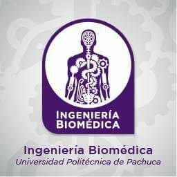

Ingeniería Biomédica

Titular: Iztmitl Ortíz Hernández
Correo institucional: biomédica@upp.edu.mx
Teléfono de Atención: 01(771)5477510 ext.2343
Horario de Atención: 09:30 a 17:30 hrs.
Introducción
La sociedad demanda actualmente un médico con actitud servicial, que se comunique de forma abierta y directa con el paciente; que colabore con el equipo multidisciplinario de salud y utilice las nuevas tecnológias para llegar a un diagnóstico de certeza.
Principales áreas de conocimiento
- Electrónica
- Programación
- Física
- Mantenimiento de equipo médico
líneas de investigación
- Desarrollo de equipo para diagnostico o tratamiento de enfermedades
- Tecnologías para la salud
objetivo
Mantener y diseñar equipos que ofrezcan soluciones tecnológicas en el campo de la salud; así como gestionar programas de mejoramiento, operación y conservación de instalaciones y equipos médicos, considerando para ello la evaluación, mantenimiento y modificación de lo existente, además del diseño de soluciones científicas y administrativas integrales, todo ello considerando el aspecto ambiental y humano.
Perfil de ingreso
El aspirante debe contar con bachillerato concluido, habilidad para el estudio de la física, matemáticas, computación, conocimiento del idioma inglés, además de tener interés en el mejoramiento social, cultural y económico del estado, de la región y del país, aunado a la inclinación por el trabajo práctico en el laboratorio y en el entorno médico.
Perfil de egreso:
El ingeniero Biomédico se caracteriza por su formación multidisciplinaria, que le permiten identificar, diagnosticar, reparar, diseñar, mejorar y proponer alternativas de solución a las necesidades y requerimientos en el área de instrumentación y apoyo tecnológico en el área médica, con criterio investigativo e innovador y principios éticos, filosóficos y humanísticos. Es un profesional capacitado para dirigir, intervenir y asesorar en el funcionamiento de centros hospitalarios. El ingeniero egresado contará con la experiencia necesaria para el uso de equipos biomédicos.
Competencias y habilidades
- Tomar medidas con los equipos de instrumentación electrónica para la obtención de lecturas empleando técnicas, lenguaje y sistemas de unidades correspondientes.
- Tomar medidas de equipos biomédicos para su registro médico empleando técnicas, lenguaje y sistemas de unidades correspondientes en la obtención de pruebas médicas.
- Diagnosticar las necesidades de mantenimiento de equipos biomédicos para elaborar el plan y programa de mantenimiento preventivo y/o correctivo mediante el análisis de las condiciones de funcionamiento del equipo biomédico y las especificaciones técnicas del fabricante.
- Reparar equipos biomédicos mediante técnicas de mantenimiento preventivo y correctivo para cumplir la normativa vigente.
- Proponer soluciones tecnológicas en el sector salud para eliminar necesidades y/o carencias detectadas en los centros hospitalarios cumpliendo la normatividad vigente.
- Integrar modelos y prototipos biomédicos para validar la funcionalidad de los equipos propuestos empleando dispositivos físicos y software de simulación, cumpliendo la normatividad vigente.
- Procesar señales biomédicas para la determinación de parámetros característicos y la interfaz de visualización en las señales biomédicas mediante técnicas y software especializado en señales médicas.
- Programar expedientes clínicos que satisfagan las necesidades específicas del sector salud cumpliendo con la normatividad vigente.
- Elaborar el plan de trabajo del proyecto tecnológico para la organización de proyectos mediante la administración y gestión de recursos con que cuenta el hospital.
- Supervisar el cumplimiento del plan de trabajo para asegurar el logro de las metas establecidas en el proyecto biomédico, verificando la ejecución de las actividades en tiempo y forma.
- Investigar las especificaciones de los equipos médicos requeridos para su selección en función de las necesidades del sector hospitalario.
- Gestionar la adquisición de los equipos biomédicos que cumplan las normativas hospitalarias vigentes para su uso en el sector salud.
oportunidades de trabajo
- En empresas de servicios en el área técnico-médica desempeñando labores de distribución, asesoría y mantenimiento de equipos médicos.
- En instituciones públicas y privadas de asistencia médica.
- En centros de investigación relacionados con las ciencias biológicas.